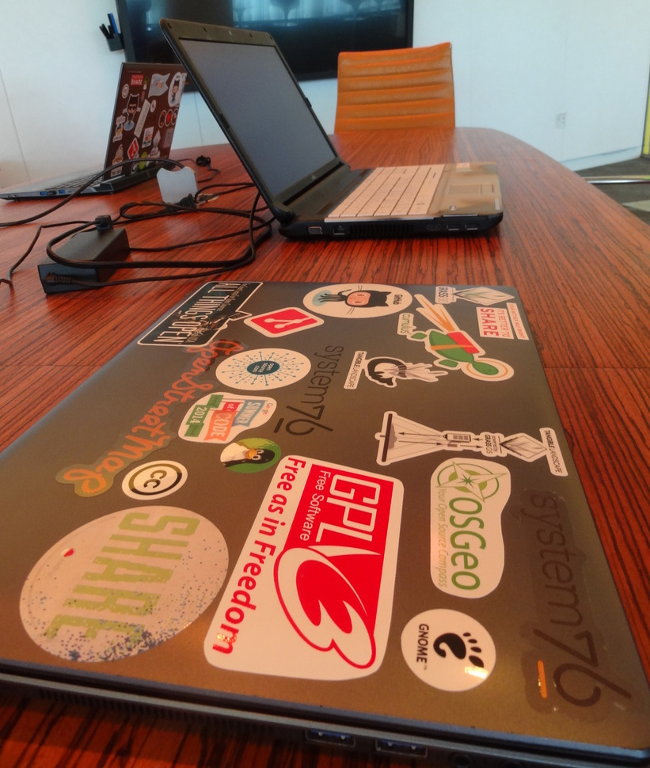
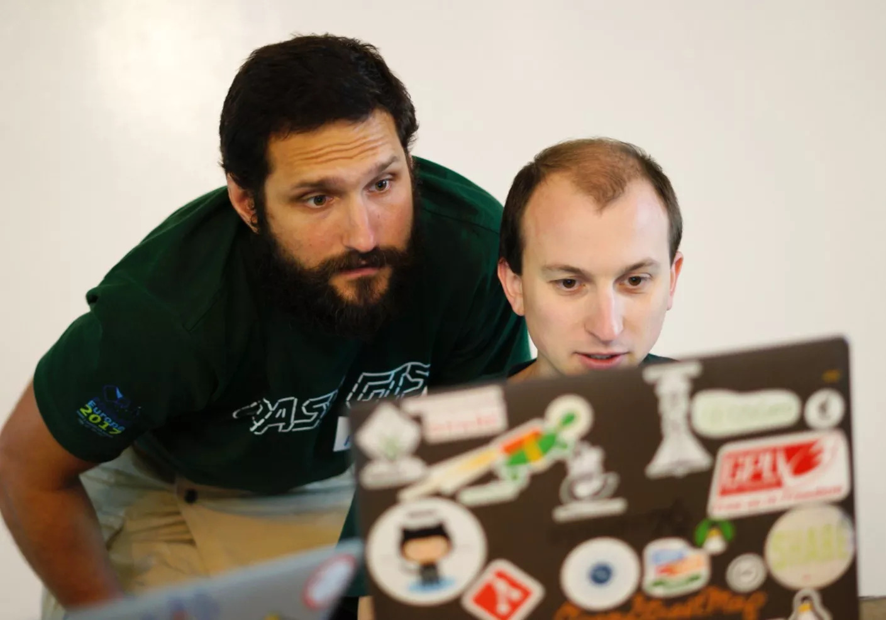

Take-Home Messages from Adding Code Quality Measures to GRASS GIS
NCSU GeoForAll Lab
at the
Center for Geospatial Analytics
North Carolina State University

FOSS4G Firenze, August 25, 2022
Vaclav (Vashek) Petras


Research software engineering as a service, Tangible Landscape support, open source development, skill-transfer at geospatial.ncsu.edu
Credit to the Community
Large contributions by: Nicklas Larsson, Anna Petrasova, Carmen Tawalika, Loïc Bartoletti, Vaclav Petras

General Features
Development Centered Around GitHub
- Git
- PRs
- Issues
- GitHub Actions (A lot of free CI time since 2018.)

Python Tools Used in GRASS GIS
- Python code formatted by Black.
- Checked against Flake8.
- Some code checked with Pylint.
C and C++ Tools Used in GRASS GIS
- GCC, Clang (locally), Coverity Scan (mostly in the past)
- Many GCC and Clang warnings fixed for 8.0 and 8.2.
- Compiler warning compliance not yet enforced.
- GCC runs in CI with GNU C 99-17 and C++ 11-17. Checks mostly C++ language variations.

General Tools Used in GRASS GIS
- CodeQL checks for Python, C, and C++ enabled.
- Super-Linter checks for JSON, Perl, Powershell, XML, and YAML. Wanted: Bash, CSS, Docker, JavaScript, Markdown, HTML, MegaLinter
-
Spellcheck scripts are in the
utilsdirectory (to be used locally). Wanted: CSpell (possibly through MegaLinter)
Statistics for GRASS GIS
| 7.8.0 | main branch | |
|---|---|---|
| PEP 8 formatting | 25518 | 0* |
| Flake8 | 10590 | 3018** |
| GCC -Wall -Wextra | 1200 | 959*** |
*Assuming Black compliance equals PEP 8 compliance.
** Flake8 issues remaining: comments, start imports, unused variables, invalid escape sequences.
*** GCC critical issues fixed: dangling-else, discarded-qualifiers, format, logical-op, parentheses, pointers, restrict, tautological-compare, uninitialized.
Work In Progress in GRASS GIS
-
Pylint
-
Runs for:
- grass.jupyter & grass.benchmark
- parts of gui/wxpython
- all other files except gunittest's testsuite directories
- Different configuration for each group
-
Runs for:
-
CodeQL
-
C and C++: 217 issues
- Some are false positives for security, but show real issues.
- Hard to communicate with contributors, although present in forks.
- Cppcheck may work well as an alternative which can run locally.
-
Python: 2 issues
- Bandit may be a better fit for Python and may find more, but will require a lot of configuration.
-
C and C++: 217 issues
Two Linting Tool Examples
Python: Black
- Unified Python formatting
- Simplest to configure, apply, enforce
- PEP 8 formatting compliance
- Developed with "
git diff" in mind
Apply formatting to all code:
black .
black --check .
C & C++: valgrind
- Memcheck is the default tool
- Check memory usage of a program
- Detects segmentation faults, leaked memory, …
- Runs the program
In a GRASS session:
valgrind --leak-check=yes r.stats.quantile base=zipcodes cover=elevation quantiles=3 -p
valgrind --track-origins=yes --redzone-size=2048 d.legend soil_loss
--exec:
grass --tmp-mapset ~/data/nc_spm/ --exec valgrind r.stats.quantile base=zipcodes cover=elevation quantiles=3 -p
Benefits
Automated Formatting Is Easier
-
Manual formatting according to a standard is hard or impossible,
while automatic formatting is easy.
- But: Should really be done using the tool.
-
No need to discuss style with every change.
- ...or at least formatting is a separate discussion.

Another endless discussion about code formatting style
Code Checks Ensure Consistent Quality
-
Common code quality level, defined, enforced.
- Simple rule: If the tools flags it, it needs to be fixed.
-
No need to check basic coding issues in PR reviews.
- Reviewers focus on functionality and project-specific issues.
- Reviews are hard and cost time, make them simpler!

Czechs happy after reviewing their code
Checks Run On All Code
- Manual testing is always incomplete.
- Tests need to be written for specific parts of code.
-
Linting has 100% coverage.
- if configured that way
- often with default settings
- includes old and forgotten helper scripts

Czechs looking into their code (photo credit: Jody Garnett)
Even Unrelated Warnings Expose Bugs
Code:
gs.fatal(_("File does not exist: {name}".format(name=filename)))
Formatting a regular string which could be a f-string (consider-using-f-string)
Analysis:
- Looks like useless warning about not using the latest f-string syntax.
-
Draws attention to a line where a translate function
named
_(underscore) is used. - The format function is called on the string, but it should be called on the result of the translation function.
gs.fatal(_("File does not exist: {name}").format(name=filename))
Introducing Linters to a Project
Start Early
It is much easier start right at the beginning, than later on.
Even for small projects!
It was hard to get started in GRASS GIS, but it is hard even for projects which are couple years old.
Now!
… but better late than never and certainly possible.
Enforce the Standards in CI
- Don't rely on contributors running the checks locally.
- With many checks, you can't even ask for that.
- But: Have a way to run the checks locally.
Coding in a protective box
Consider Warnings To Be Errors
- Bad practice warning is useless if it is not enforced.
- Some tools warn, but don't report that as a failure.
Example for GCC and Clang:
gcc -Wall -Werror ...
Minimize errors from spilled beer. You have been warned.
Tips and Tricks
Be Specific in Excluding and Ignoring
Exclude only specific files or specific checks for specific files.Flake8 can ignore warnings per file or directory:
per-file-ignores =
lib/init/grass.py: E501, E722, F821, F841, W605
gui/wxpython/vnet/*: F841, E501
Warnings can be easily enabled again later from a single place.
Be transparent in what is ignored
Minimize Where Warning is Ignored
Disable only a specific warning for a specific directory, file, or line.Yes — only one line:
apple._refresh_core() # pylint: disable=protected-access
# pylint: disable=protected-access
apple._refresh_core()
Refine Ignores
Continue improving your configuration and make it specific to your project.Code:
gs.fatal(_("File does not exist: {name}").format(name=filename))
Undefined variable '_' (undefined-variable)
disable=undefined-variable
additional-builtins=_
Explain Why You Ignore Warnings
For permanent ignores, include explanation.
Example: Pylint disable in a theoretical GUI application:
# Always show an error message window even when the code is broken.
# This avoids tracebacks appearing without context.
except Exception as error: # pylint: disable=broad-except
show_error_window(error)
Developers thinking hard what the code means
Contribute Time
-
Fix the code.
- Great learning experience: small and independent issues.
-
Submit a good PR:
- Separate unrelated fixes into multiple PRs for easier review.
- Remove ignores from configuration.
- Join Hour with the developer at the Community Sprint.
- Do another task to free someone's time for coding.
Feeling great after contributing to GRASS GIS
Contribute Money
-
Pay for fixing the code.
- opencollective.com/grass → GRASS GIS Mini Grants, …
- Pay a developer or company (we are here, talk to us).
- Ask your employer to donate your or your colleague's time.
$
Contribute: github.com/OSGeo/grass
Get support from NC State University: vpetras@ncsu.edu
Bonus Content
Changes in Mindset
If It Ain't Broke, Don't Fix It, Or?
Why to Change Code which Works?
With languages, dependencies, operating systems changing fasts, even stable code needs modifications. So, you may as well update the code to latest standard because:
- Non-compliant code broken.
Even if you don't care about best practices:
- Hard to maintain code is broken.
- Hard to change code is broken.
When you can apply automatic linters, maintaining and changing the code is simpler because there is more checks in place.
Correctness Over Consistency
Should I changing surrounding code only because it is ugly?
Don't add bad code because the surrounding code is bad.
Leave the code in a better condition than when you found it.
Best Practices Change
Best practices are a moving target.- Black formatting may change with new version of Black (each year).
- What is best formatting changes as new issues or use cases are discovered.
- Formatting may change with new syntax available.
- Best practices may change with new libraries, syntax, or security concerns.
So, the code will change (and that's fine).
Please, test!
The day when all manual testing will be obsolete because of some tool is very far away.
Linters work together with, not instead of manual testing and written tests.
More Linting Tools
Python: Flake8
- Checks for errors and best practices in Python code
- General PEP 8 compliance
-
Combines:
- PyFlakes (error checker), pycodestyle (formerly pep8), mccabe (complexity checker)
-
Some configuration required
- Conflicts with Black
- Special files may need special handling (e.g.,
__init__.py)
- Changes in code likely required
Check all code:
flake8
Python: pydocstyle
- Checks Python docstring conventions
- PEP 257 Docstring Conventions (PEP 8 docstring parts)
- Missing docstrings for public methods, "Return" versus "Returns", …
Check all code:
pydocstyle
Python: isort
- Sorts imports in a unified, configurable way
- Configuration needed for Black compatibility
Apply formatting to all code:
isort .
isort --check-only .
Python: Pylint
- Errors, best practices, code smells in Python code
- Makes suggestions for changes, refactoring
- Complex configuration, runs long time
- Imports the code (but does not run it)
- Teaches how to write better code
- Unlikely you will get it right without running it
General use:
pylint scripts/v.db.univar/v.db.univar.py
PYTHONPATH=$(grass --config python_path) \
LD_LIBRARY_PATH=$(grass --config path)/lib \
pylint scripts/v.db.univar/v.db.univar.py
--exec:
grass --tmp-location XY --exec pylint scripts/v.db.univar/v.db.univar.py
C & C++: GCC, CLang
- Errors, warnings, standards
- During compilation, just enable additional switches
- Steady increase in warnings enabled by Linux distributions
- Warnings on one platform may be bugs on another
General use:
gcc -std=c99 -Wall -Wextra ...
export CFLAGS="-std=gnu99 -Wall"
export CXXFLAGS="-std=c++11 -Wall"
./configure \
--enable-largefile \
...
C & C++: Cppcheck
- Program flow issues, undefined behavior, …
- Static analysis - the program does not run
- No or minimal configuration
Usage:
cppcheck lib/
C & C++: Clang-Tidy
- Many checks including programming style of specific projects or companies
- Static analysis - the program does not run
- Complex configuration, somewhat easier with CMake
Usage:
clang-tidy -header-filter=project/*.hpp -checks=* -warnings-as-errors=* main.cpp
C & C++: indent
- C formatting
- Configuration needed
- Not meant to handle C++
- Might be a good choice for C-only project
C & C++: ClangFormat
- C and C++ formatting
- Configuration needed
- For consistent results, specific version is needed
- Best used though integration in another tool
ClangFormat runs on files (not directories):
clang-format vector/v.kernel/main.c
clang-format --dry-run -Werror vector/v.kernel/main.c
More Tips and Tricks
Use More Than One Tool
- Different tools are optimized for different use cases.
- Not just formatting versus programming best practices.
- When fixing an issue for one tool, another tool may catch a suboptimal fix.
- Some tools better work in CI, some locally.
- Tools have bugs.
-
Examples:
- With Black, it turn out that Flake8 was not following PEP 8.
- Flake8 warns about style of variable names, spell checking warns about jargon and abbreviations in variable names.
- C++ compilers focus on different things than static analyzers.
- Spell check is easier to use in a text editor than in CI.
Exclude Directories
Reasons to exclude files or directories:- Irrelevant files (
.git) - Generated code and build artifacts (
build,dist.*) - Exact copies of 3rd party code in the repo
- Non-compliant code (before it is fixed)
[tool.black]
exclude = '''
(
/(
\.git
| \.venv
| bin\..*
| dist\..*
)/
| python/libgrass_interface_generator/
)
'''
Use Separate Runs If Needed
Run on different parts of source code in complete isolation.In command line:
black --check --diff scripts
black --check --diff utils
strategy:
matrix:
directory:
- scripts
- utils
fail-fast: false
steps:
# ...
- name: Run Black
run: |
cd ${{ matrix.directory }}
black --check --diff .
Use Git Blame Ignore Revisions
If you have a lot of formatting changes (Black or ClangFormat changes), commit them separately and create and maintain.git-blame-ignore-revs file
with a list of Git commit hashes to ignore when doing git blame.
→ Minimizes influence of formatting changes on code history.
Use locally:
git blame vector/v.patch/main.c --ignore-revs-file .git-blame-ignore-revs
Specify Versions
- CI or the linter tools have Python version configuration.
- This helps to clarify supported Python versions.
actions/setup-python in GitHub Actions:
- name: Set up Python
uses: actions/setup-python@v2
with:
python-version: "3.10"
pylint --py-version=3.7 ...
Black target Python versions:
[tool.black]
target-version = ['py37', 'py38', 'py39', 'py310']
Language Choice
Use simpler Language?...if you can.
Python is easier to get right and has easy to use tooling than C and C++.
But: C compilation-time checks. Strong C++ type checking.
More about GRASS GIS
Addons Repository
- Community-maintained tools (addons aka extensions, plugins)
- Separate from the main repository, but only one repository
- A repository with the source code, not just a registry
- Best of both worlds:
- Broader community of contributors including one-time contributors
- Single repository maintained by the core community similarly to the main repository